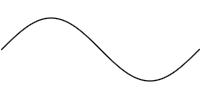

In this chapter we'll see how to create simple images, how to apply transformations to an image, and finally how to save an image to disk as a PNG file.
> import Graphics.Curves
curve function
> curve :: Scalar -> Scalar -> (Scalar -> Point) -> Imagewhich takes two scalars
a and b and a function f
from scalars to points1 and creates an Image with
a single curve consisting of the points { f t | a ≤ t ≤ b }. For instance,
> sineWave = curve 0 (2 * pi) $ \t -> Vec t (sin t) The section on rendering below explains how the points of the curve gets translated to pixels in the final image.
mappend (or the
friendlier <>):
> cosineWave = curve 0 (2 * pi) $ \t -> Vec t (cos t) > waves = sineWave <> cosineWaveIt makes no difference for this example, but later it will be important to keep in mind that the left argument goes on top of the right argument. The chapter on blending looks at the various ways to combine images in more detail.
+++
combinator.
> waves1 = sineWave +++ curve (2 * pi) (3 * pi) (\t -> Vec t (cos t))
 If the end-points don't coincide, a straight line segment is added to
connect the two2.
The combinators
If the end-points don't coincide, a straight line segment is added to
connect the two2.
The combinators <++ and ++> adds a straight line segment
to either end of a curve.
> waveBlock = botL <++ sineWave ++> botR ++> botL > where > botL = Vec 0 (-1.2) > botR = Vec (2 * pi) (-1.2)

> unitCircle = curve 0 (2 * pi) $ \t -> Vec (cos t) (sin t)
 Next, we'll reimplement the
Next, we'll reimplement the line and poly functions from
the library:
> line' p q = curve_ $ \t -> diag (1 - t) * p + diag t * q > poly' (p:q:ps) = foldl (++>) (line' p q) (ps ++ [p])The
curve_ lets you omit the start and end values for the parameter
when they are 0 and 1. Interpolating between two points is sufficiently useful
to warrant its own library function interpolate, so we can
define line' more elegantly as
> line' p q = curve_ $ interpolate p qThe
poly function creates a closed4 polygon
from the given points so to create a box we just give the four corners.
> box w h = poly [0, Vec w 0, Vec w h, Vec 0 h] > goldenBox = box ((1 + sqrt 5) / 2) 1Regular n-sided polygons are also easy to define5 using
poly.
> regularCorners n = > [ Vec (cos x) (sin x) > | i <- [0..n - 1] > , let x = pi/2 + 2 * pi * fromIntegral i / fromIntegral n ] > > regularPoly = poly . regularCorners
 Reordering the vertices of an odd-sided regular polygon we can make a star:
Reordering the vertices of an odd-sided regular polygon we can make a star:
> interleave [] ys = ys > interleave (x:xs) ys = x : interleave ys xs > > regularStar n = poly $ uncurry interleave > $ splitAt (div n 2 + 1) $ regularCorners n

+++
and using <> on two curves with coinciding concatenation points? The
non-answer is that in the first case you get an image with a single curve and
the second case you get an image with two curves. This difference becomes most
obvious once you start filling curves (see the chapter on
curve styles) but we can observe it already with the tools we have.
Let's define a reversed version of the sine wave, which starts at 2π and ends at 0, but consists of exactly the same points as the previous sine wave.
> sineWaveR = curve 0 (2 * pi) $ \t -> Vec (r t) (sin (r t)) > where r t = 2 * pi - tThis is in fact a useful operation to have when concatenating curves, so it's defined in the library as
reverseImage. Using this we can define
> sineWaveR = reverseImage sineWaveNow, let's look at the difference between combining and concatenating
sineWave and sineWaveR.
> combined = sineWave <> sineWaveR > concatenated = sineWave +++ sineWaveR
| combined | concatenated |
If you look closely, you can see that the first image, which used <>,
is darker and less smooth than the one using +++. Basically what
happens is that in the combined case the sine wave is drawn twice, once for
each curve, whereas each point on the concatenated curve is only drawn once,
even though the curve passes through it twice. The section on rendering below explains the rendering process in more detail.
curve and
<>, so it make things easier there is a set of transformation
combinators to transform images. The basic function is the transform function of the Transformable class:
> transform :: Transformable a => (Point -> Point) -> a -> aTransforming an image applies the transformation function to all points of the curves of the image6. For instance,
> twoWaves = sineWave <> transform (+ Vec 0.3 0.7) sineWaveFor convenience a number of common transformations are defined in the library. Moving an image by a given vector, as above, can be done with the
translate function, so twoWaves can be defined equivalently as
> twoWaves = sineWave <> translate (Vec 0.3 0.7) sineWaveThe
scale and rotate functions do what their names suggest:
> threeWaves = sineWave > <> scale 1.5 sineWave > <> rotate (pi/4) sineWaveNotice how both rotation and scaling are centered at the origin. The functions
scaleFrom and
rotateAround can be used to specify a different center.
> threeWaves' = sineWave > <> scaleFrom c 1.5 sineWave > <> rotateAround c (pi/4) sineWave > where c = Vec pi 0The transformations above are all linear transformations, but any (continuous7) function can be used to transform an image.
> wavyWave = transform (\p -> p + Vec 0 (cos (4 * getX p) / 2)) > sineWave
Image. The function that does this is
renderImage, which takes an image and writes it to a PNG file with
the specified name. For instance
> saveBox :: IO () > saveBox = renderImage "box.png" 100 100 white > $ translate 10 (box 80 80)creates the following 100x100 PNG file
box.png:
Note how the points in the image correspond directly to pixels in the final
picture. If we make the box wider it doesn't fit in the picture:
> saveBox' :: IO () > saveBox' = renderImage "box.png" 100 100 white > $ translate 10 (box 100 80)In all the examples above we never cared about making sure that everything fit nicely in the final picture. In fact, if there had been a direct correspondence between points and pixels most examples above would only have been a few pixels wide. Indeed, having to worry about final pixel coordinates would be very tedious if all you want to do is create some nice figures. To deal with this there are two functions for automatically fitting an image inside some given bounds:
autoFit and autoStretch.
> autoFit :: Point -> Point -> Image -> Image > autoStretch :: Point -> Point -> Image -> ImageBoth functions take two points describing the bottom-left and top-right corners of a rectangle, and an image which is resized and moved to fit inside that rectangle. The difference between them is that
autoFit preserves the
aspect ratio of the image, whereas autoStretch scales the X and Y
dimensions independently.
> fit = autoFit 0 (Vec 200 100) unitCircle > stretch = autoStretch 0 (Vec 200 100) unitCircle
| autoFit | autoStretch |
▲ 1
Note that Point is just a synonym for Vec, the
type of 2-dimensional vectors.
▲ 2
To skip connecting the end-points, use +.+ instead.
▲ 3
There is a circle combinator in the library which takes the center
and radius of the circle as parameters.
▲ 4
The lineStrip combinator is your friend if you don't want to close
the polygon.
▲ 5
In fact, regularPoly is already defined in the Geometry module.
▲ 6 This isn't quite true, but true enough for our current purposes. See the chapter on advanced curves for more details.
▲ 7 Curve functions need to be continuous for the rendering algorithm to not get confused.